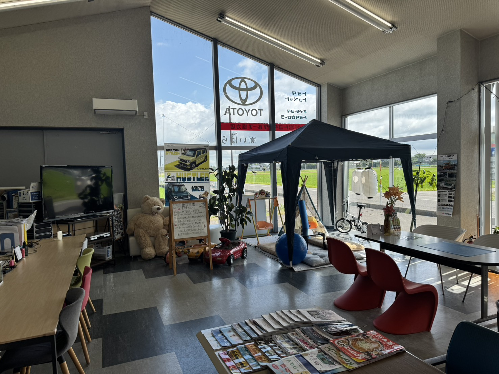

お車探しやお支払い、車検・整備、鈑金塗装、買取、保証、ご来店について。これまでにお客様からいただいたご質問をまとめました。
車のことは、専門用語も多く、わかりにくいことが少なくありません。このページでは、これまでによくいただいたご質問を7つのカテゴリに分けてお答えしています。ここに載っていないご質問も、もちろん歓迎です。「こんなことを聞いてもいいのだろうか」と迷われたら、そのままお電話でお聞かせください。

お車のご事情はお一人おひとり異なりますので、このページだけではお答えしきれないことが必ずあります。「うちの場合はどうなるのだろう」と思われた点は、そのままお電話でお尋ねください。所要時間は数分で済むことがほとんどです。
お急ぎでない場合は、LINEでのご相談も承っています。お車の写真や車検証を送っていただければ、状態を確認したうえでお答えできることもあります。営業時間外にいただいたご連絡には、翌営業日以降に順次ご返信します。
もちろん、ご来店いただいて直接お話しいただくのもいちばん確実です。ご相談だけのご来店も歓迎しておりますので、お近くにお越しの際はお気軽にお立ち寄りください。
「こんなことを聞いてもいいのかな」という内容こそ歓迎です。お電話一本で、たいていのことはその場でお答えできます。
📞 0256-86-2944 受付 8:30-18:30